Свойства flex-контейнера
flex-direction
Это свойство указывает, как flex-элементы располагаются во flex-контейнере, задавая направление главной оси flex-контейнера. Элементы могут располагаться по двум основным направлениям — как строки по горизонтали или как столбцы по вертикали.
Значения
Со значением row flex-элементы располагаются в ряд слева направо в контексте ltr.
.flex-container {
flex-direction: row;
}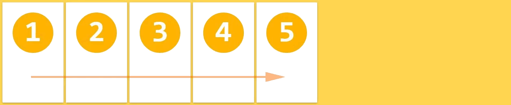
При значении row-reverse flex-элементы располагаются в ряд справа налево в контексте ltr.
.flex-container {
flex-direction: row-reverse;
}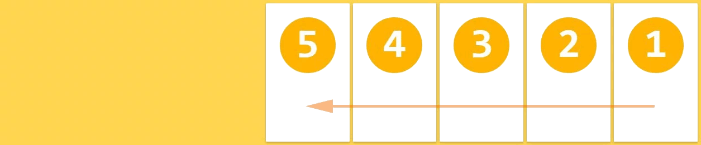
Со значением column flex-элементы располагаются в колонку сверху вниз.
.flex-container {
flex-direction: column-reverse;
}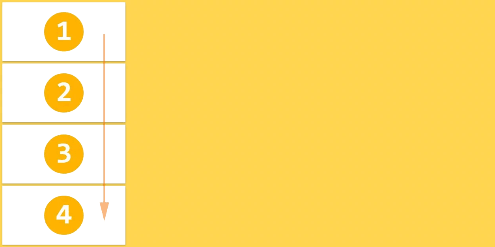
При значении column-reverse flex-элементы располагаются в колонку снизу вверх.
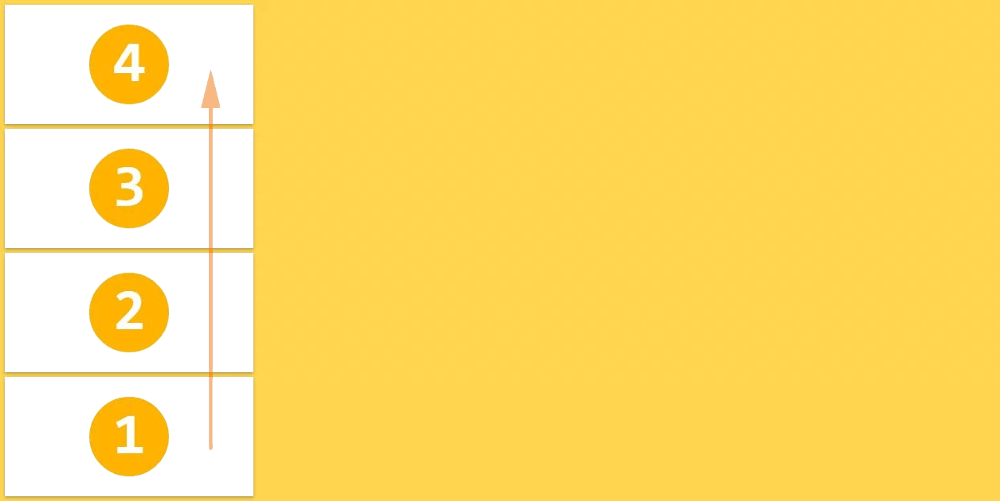
Значение по умолчанию: row.
row и row-reverse зависят от режима написания, так что в контексте rtl они будут соответственно перевёрнуты.
flex-wrap
Исходная концепция flexbox — это контейнер для установки своих элементов в одну строку. Если flex-контейнер располагает свои элементы в одну или несколько строк, то свойство flex-wrap управляет направлением, в котором эти новые строки располагаются.
Значения
.flex-container {
flex-wrap: nowrap;
}flex-элементы отображаются в одну строку, по умолчанию они уменьшаются, чтобы соответствовать ширине flex-контейнера.
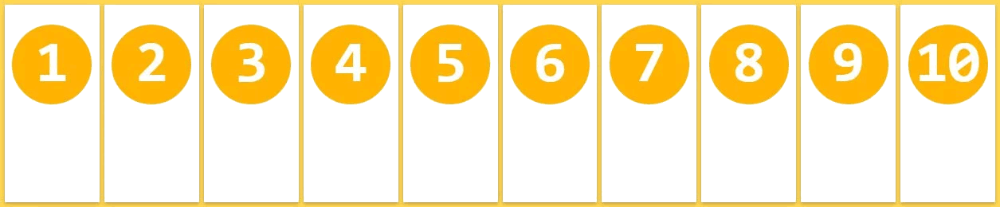
.flex-container {
flex-wrap: wrap;
}flex-элементы отображаются в несколько строк, если это необходимо, слева направо и сверху вниз.
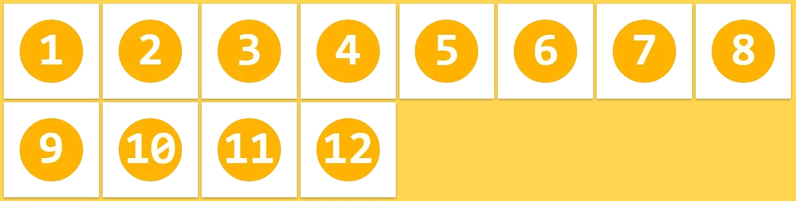
.flex-container {
flex-wrap: wrap-reverse;
}flex-элементы отображаются в несколько строк, если это необходимо, слева направо и снизу вверх.
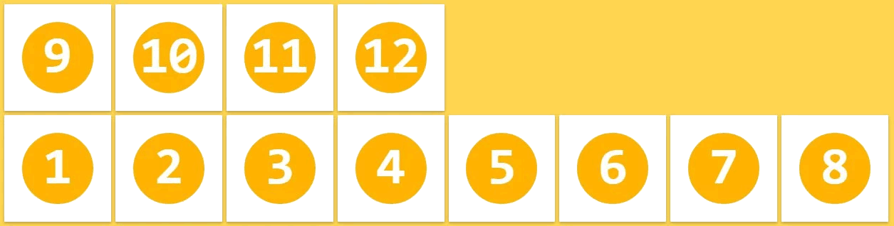
Значение по умолчанию: nowrap.
Эти свойства зависят от режима написания, поэтому в контексте rtl они будут соответственно перевёрнуты.
flex-flow
Это свойство является сокращением для установки свойств flex-direction и flex-wrap.
Значения
.flex-container {
flex-flow: <flex-direction> || <flex-wrap>;
}Значение по умолчанию: row nowrap.
justify-content
Свойство justify-content выравнивает flex-элементы вдоль главной оси текущей строки flex-контейнера. Свойство помогает распределять оставшееся свободное пространство, когда все flex-элементы в строке не растягиваются или растягиваются, но достигли максимального размера.
Значения
.flex-container {
justify-content: flex-start;
}flex-элементы выравниваются по левой стороне flex-контейнера в контексте ltr.
.flex-container {
justify-content: flex-end;
}flex-элементы выравниваются по правой стороне flex-контейнера в контексте ltr.
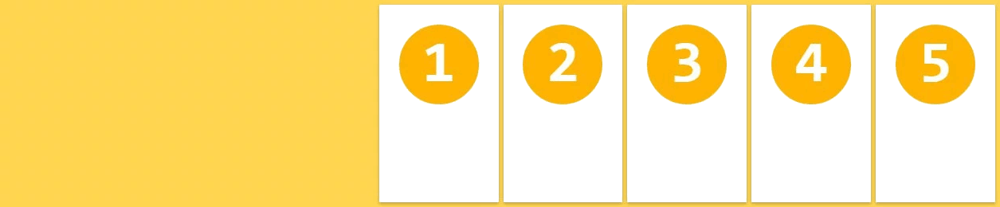
.flex-container {
justify-content: center;
}flex-элементы выравниваются по центру flex-контейнера.
.flex-container {
justify-content: space-between;
}flex-элементы отображаются с равным интервалом между ними, первый и последний flex-элементы выравниваются по краям flex-контейнера.
.flex-container {
justify-content: space-around;
}flex-элементы отображаются с равным интервалом вокруг каждого flex-элемента, включая первый и последний.
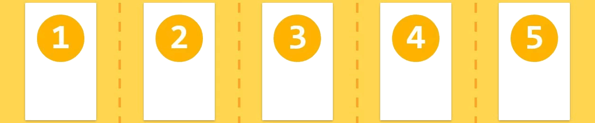
Значение по умолчанию: flex-start.
align-items
flex-элементы могут быть выровнены по поперечной оси текущей строки flex-контейнера, подобно justify-content, но в перпендикулярном направлении. Это свойство устанавливает выравнивание по умолчанию для всех flex-элементов, включая анонимных.
Значения
.flex-container {
align-items: stretch;
}flex-элементы заполняют всю высоту (или ширину) от поперечного начала до поперечного конца flex-контейнера.
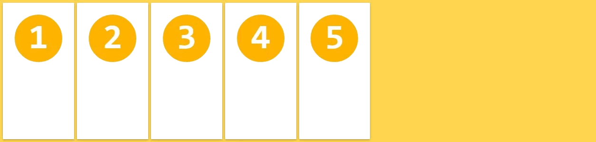
.flex-container {
align-items: flex-start;
}flex-элементы располагаются у поперечного начала flex-контейнера.
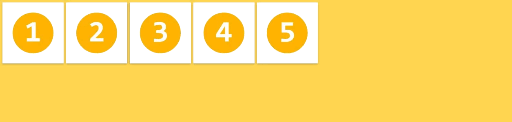
.flex-container {
align-items: flex-end;
}flex-элементы располагаются у поперечного конца flex-контейнера.
.flex-container {
align-items: center;
}flex-элементы располагаются в центре поперечной оси flex-контейнера.
.flex-container {
align-items: baseline;
}flex-элементы выравниваются таким образом, чтобы их базовые линии были выровнены.
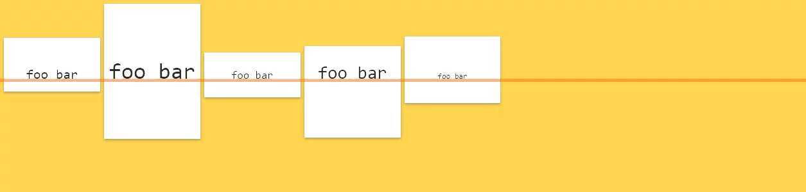
Значение по умолчанию: stretch.
Подробнее о том, как рассчитываются базовые линии, читайте здесь.
align-content
Свойство align-content выравнивает строки внутри flex-контейнера, когда в поперечной оси имеется дополнительное пространство, подобно тому, как justify-content выравнивает отдельные элементы по главной оси.
Значения
.flex-container {
align-content: stretch;
}flex-элементы отображаются с дополнительным пространством после каждой строки flex-элементов.
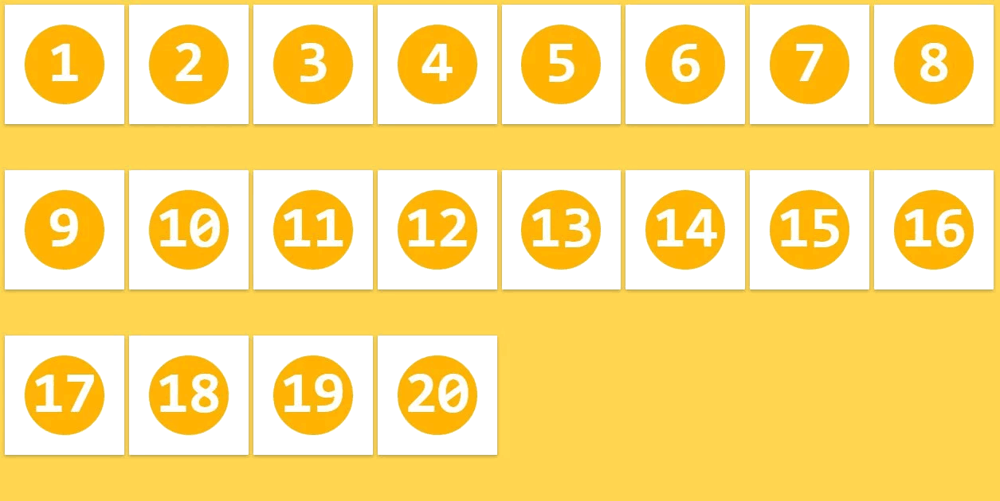
.flex-container {
align-content: flex-start;
}flex-элементы располагаются стопкой возле поперечного начала flex-контейнера.
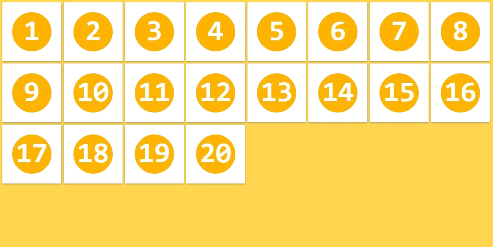
.flex-container {
align-content: flex-end;
}flex-элементы располагаются стопкой возле поперечного конца flex-контейнера.
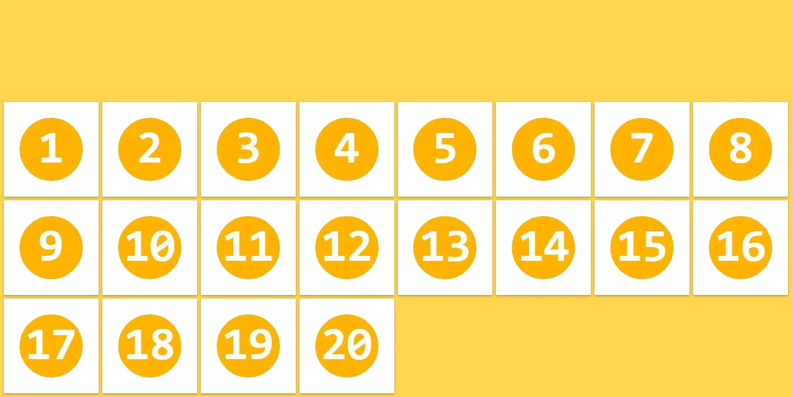
.flex-container {
align-content: center;
}Строки flex-элементов располагаются в центре поперечной оси flex-контейнера.
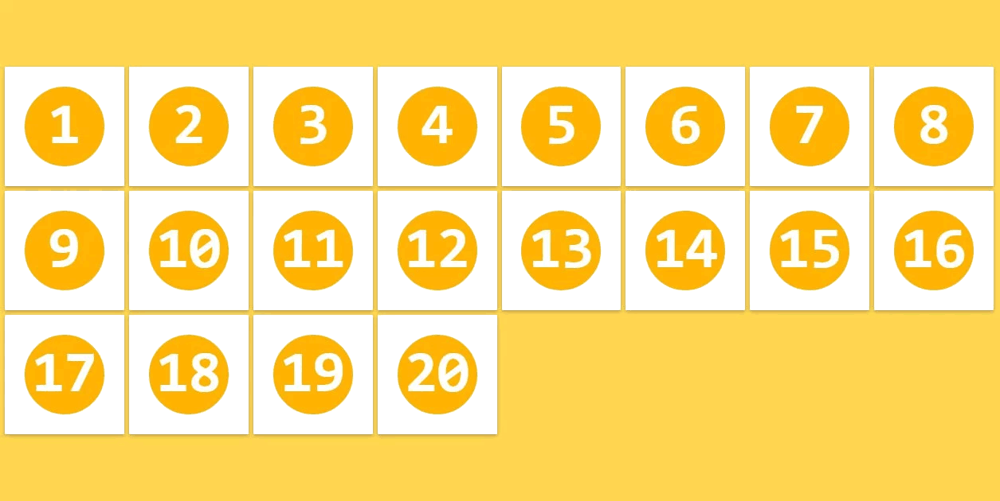
.flex-container {
align-content: space-between;
}Строки flex-элементов отображаются с равным интервалом между ними, первая и последняя строки выравниваются по краям flex-контейнера.
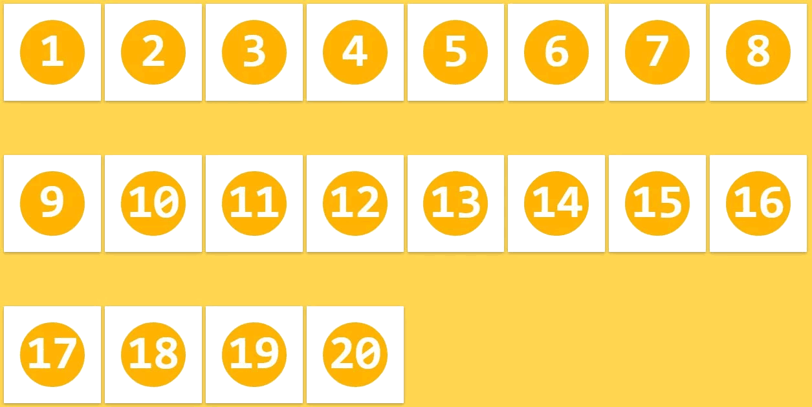
.flex-container {
align-content: space-around;
}flex-элементы отображаются с равным интервалом вокруг каждой строки.
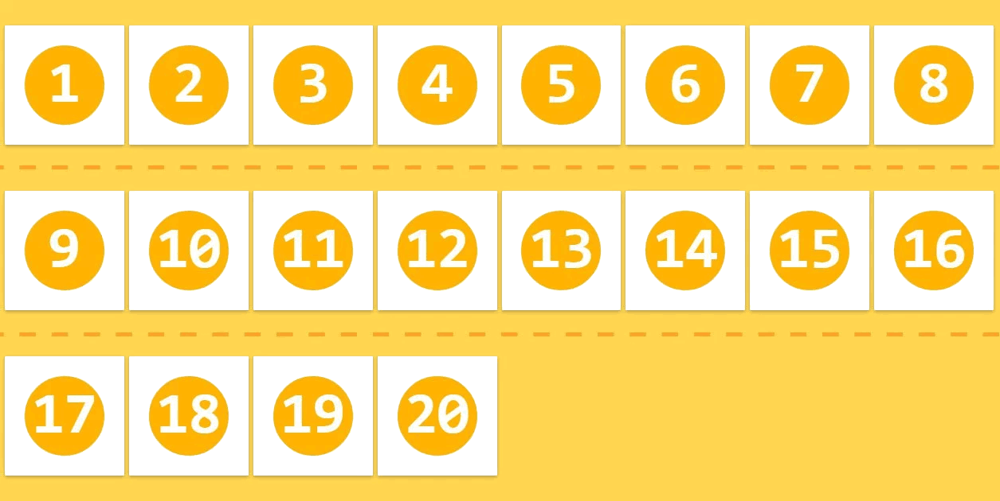
Значение по умолчанию: stretch.
Это свойство имеет эффект только тогда, когда flex-контейнер содержит несколько строк flex-элементов. Если элементы располагаются в одну строку, свойство align-content никак не влияет на макет.
Замечания
- Все свойства column-* не оказывают влияния на flex-контейнер.
- Псевдоэлементы ::first-line и ::first-letter не применяются к flex-контейнерам.